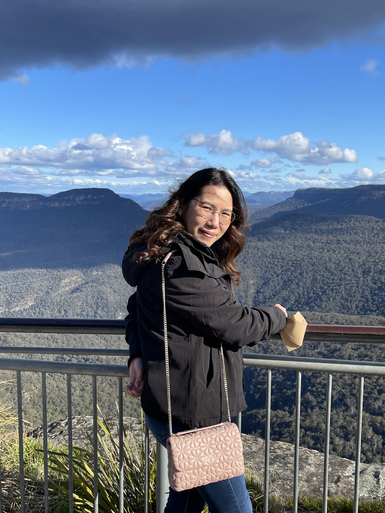

Medical image analysis
Segmentation and visual analysis in collaborative medical imaging research.
Computer vision · Machine learning · Education
Researcher & Lecturer
I work at the intersection of computer vision, machine learning, and education. My research explores how visual information can support animal identification, medical image analysis, and environmental monitoring.

Based in Salaya, Thailand
01 / Research focus
Animal biometrics
How can we recognise an individual dog when others of the same breed look remarkably similar?
Inside the research ↗Facial biometrics, visual similarity, and learning to distinguish difficult pairs.
Segmentation and visual analysis in collaborative medical imaging research.
Camera-based understanding of water levels and snow scenes.
Programming education, learning environments, and practical computing.
02 / Recent publications
P. Borwarnginn, W. Kusakunniran, Q. Wu, T. Siriapisith
ECTI Transactions on Computer and Information Technology · 20(3), 425–436
Read publicationW. Kusakunniran, K. Aukkapinyo, K. Thongkanchorn, P. Borwarnginn, T. Imaromkul, S. Mongkolluksamee, P. Ritthipravat, P. Tuakta, P. Benjapornlert
International Conference on Multimedia and Image Processing (ICMIP) · Proceedings of SPIE, volume 14298
Read publicationJ. Thongyoo, S. Intagorn, P. Borwarnginn, T. Siriapisith, W. Kusakunniran
International Conference on Knowledge and Smart Technology (KST) · 98–103
Read publicationI teach programming and machine learning, connecting foundational ideas with practical implementation.
For research collaboration, student projects, or teaching enquiries, please get in touch.